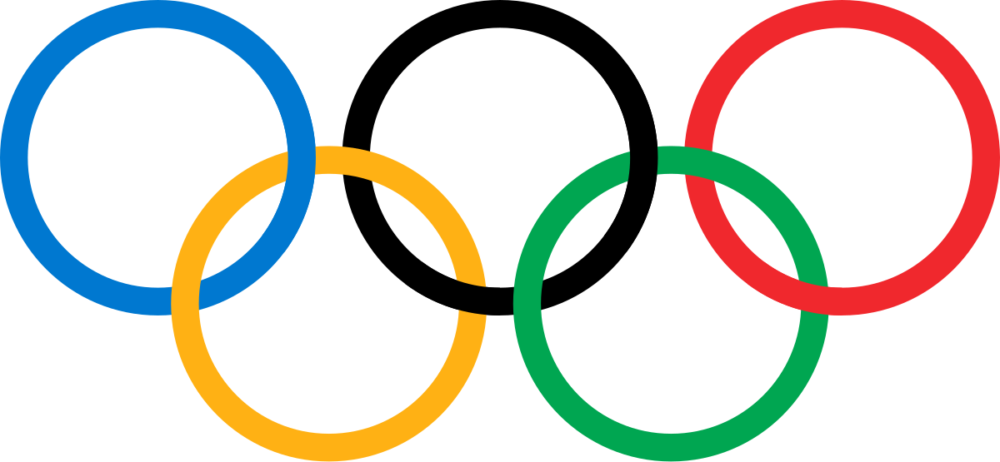

O atletismo é um conjunto de esportes constituído por três modalidades: corrida, lançamentos e saltos. De modo geral, o atletismo é praticado em estádios, com exceção de algumas corridas de longa distância, praticadas em vias públicas ou no campo, como a maratona.
O atletismo é a forma organizada mais antiga de competição. As primeiras reuniões organizadas da história foram os Jogos Olímpicos, que os gregos iniciaram no ano 776 a.C. Durante anos, o principal evento olímpico foi o pentatlo, que compreendia lançamentos de disco, salto em comprimento e corrida de obstáculos.
O atletismo surgiu nos Jogos Antigos da Grécia. Desde então, o homem vem tentando superar seus movimentos essenciais como caminhar, correr, saltar e arremessar.
Na definição moderna, o atletismo é um esporte com provas de pista (corridas rasas, corridas com barreiras ou com obstáculos, saltos, arremesso, lançamentos e provas combinadas, como o decatlo e heptatlo); corridas de rua (nas mais variadas distâncias, como a maratona e corridas de montanha); provas de cross country (corridas com obstáculos naturais ou artificiais); e marcha atlética. Considerado o esporte-base, por testar todas as característica básicas do homem, o atletismo não se limita somente à resistência física, mas integra essa resistência à habilidade física. Comporta três tipos de provas, disputadas individualmente que são as corridas, os saltos e os lançamentos. Conforme as regras de cada jogo, as competições realizadas em equipes somam pontos que seus membros obtêm em cada uma das modalidades.

Alisson dos Santos é um atleta brasileiro que compete no atletismo. Nas Olimpíadas de Paris, em 2024, foi medalha de bronze. Confira sua premiação abaixo: